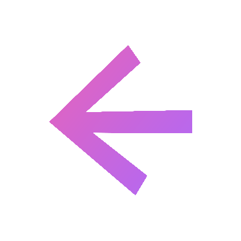

Time and date

Time and date
You will need to have Python installed on your machine.
If you don't have it, download and install it from the official Python website. Make sure to add Python to your system's PATH during installation.
Next, get the bat file from the box below and execute it in a "BlockUI Server" folder (you can call it like you want)
Edit the python script it generated to put the URL of block UI in the ALLOWED_ORIGINS variable (change the "http://127.0.0.1:5500")
You now have all you need for the following steps.
open a CMD in the blockUI Server folder and type : python server.py
You should see a message saying that the server is running on http://127.0.0:5000.
Now copy the api token displayed in the CMD, go to your blockui main menu and paste it after clicking the key icon.
Everything should now work !
Create a new block and paste the path of the program you wanna launch in the right field.
Now, when you click on this block, the app should open. Check the bottom right corner of bloockUI to see if something happened.
Use the notepad launcher to test if the connection works.
This one should work on any windows machine, so if it doesn't work, check your setup.